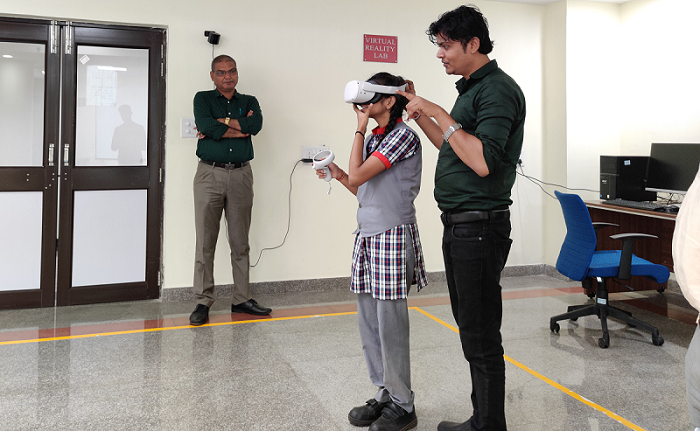
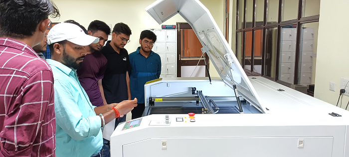
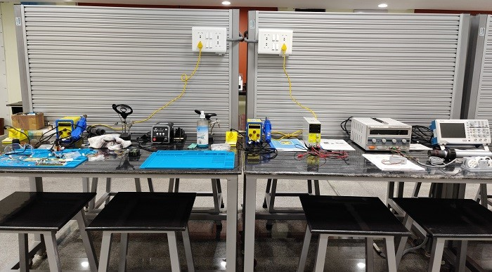

VR LAB
A VR lab, or Virtual Reality lab, holds significant importance due to its wide range of applications and benefits across various fields. Here are some reasons why VR labs are crucial and valuable:
-
Enhanced Learning and Training:
-
Safe and Controlled Experiments:
-
Visualization and Design:
-
Therapeutic Applications:

ELECTRONICS LAB
An electronics lab is vital for engineers, students, and professionals, providing tools and equipment for designing, testing, and troubleshooting electronic circuits. Here are some key points highlighting the importance of electronics labs:
-
Prototyping and Circuit Design:
-
Educational Purposes:
-
Product Development and Innovation:
-
Testing and Quality Control:

FAB LAB
A Fab Lab, short for Fabrication Laboratory, is a high-tech workshop equipped with advanced tools and machinery for digital fabrication, prototyping, and creative projects, fostering innovation and hands-on learning. Here are some key points highlighting the importance of mechanical labs:
-
Product Design and Development:
-
Education and Training:
-
Material Testing and Analysis:
-
Mechanical Testing and Quality Control:

MINE SIMULATION SPACE
A mine simulation space, offers immersive training and research experiences, utilizing virtual environments to replicate mining scenarios. It's a valuable resource for training and advancing skills in the mining industry. Here are some key points highlighting the importance and applications of mine simulation spaces:
-
Training and Skill Development:
-
Safety Enhancement:
-
Optimization and Efficiency:
-
Equipment Testing and Validation:

MINE AUTOMATION SPACE
Mine automation revolutionizes the mining industry by incorporating robotics and AI, enhancing safety, efficiency, and sustainability. It reduces human intervention and maximizes resource extraction. Here are some key points highlighting the importance and applications of mine simulation spaces:
-
Enhanced Safety
-
Higher Efficiency
-
Sustainability
-
Reduced Labor

Electronics And Sensor Space
Electronics and Sensor Space" refers to the domain encompassing electronic devices and sensors. It plays a pivotal role in modern technology, with key applications in:
-
IoT and Smart Devices
-
Communication
-
Environmental Monitoring
-
Optimization and Efficiency
